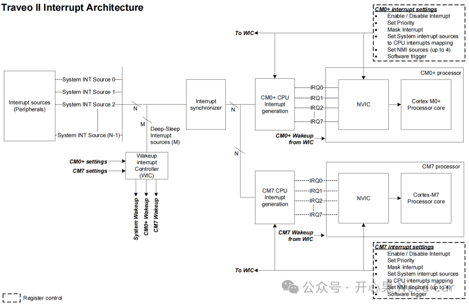
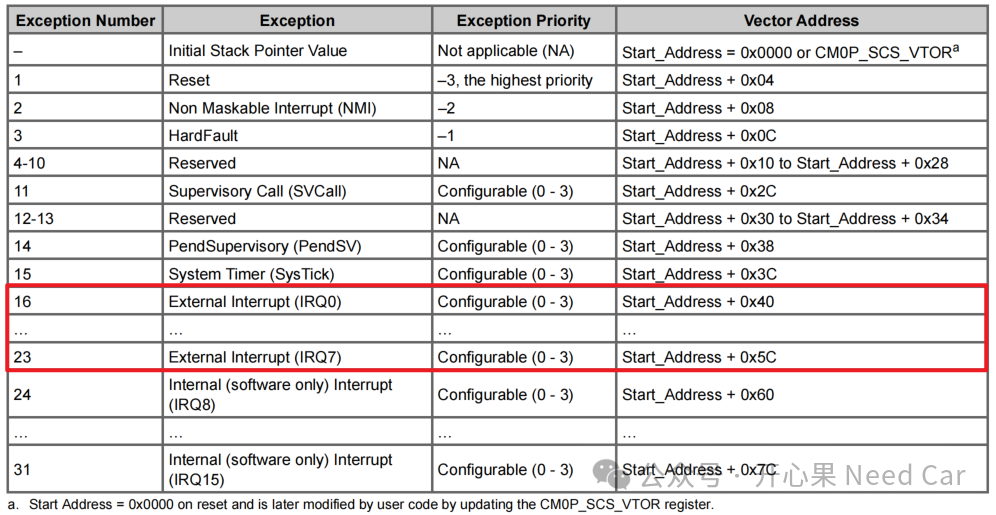
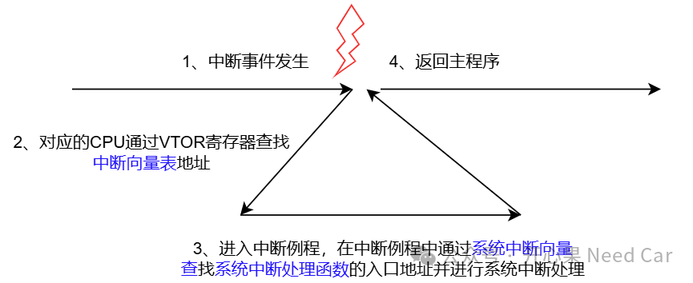

开心果 Need Car · 2024-12-24T06:37:00+08:00 · 微信原文
1、什么是Interrupt、Trap
中断：由CPU外部的外围设备（peripherals）产生的事件，eg：定时器、通信模块、端口引脚等触发的事件信号。
异常：由CPU产生的事件，eg：内存访问故障、除零等事件。
不管是中断还是异常都会导致当前CPU运行的主程序被迫停止，转而去运行对应的异常处理程序或中断服务例程（ISR）。
2、中断系统工作原理
如果要了解一个CPU如何产生中断，以及如何处理中断，可以先熟悉其中断架构，以TraveoII为例（eg：CYT4BB），中断架构如下所示：

既然中断是外围设备产生的事件，也就是说：中断源（Interrupt Sources）可以有多个，为了区分中断的来源，可以给每个外围设备分配一个编号，也就是中断向量号，如上图：System INT Source 0~System INT Source N。对于CYT4BB，最多可以支持1023个外部产生的系统中断。虽然中断的触发源有多个，但是，每个CPU支持的中断有限，eg：CM0+最多支持32个中断（IRQ[31:0])，CM7最多支持240个中断（IRQ[239:0])，CPU支持的中断有限，又如何将所有的中断请求都处理到呢？需要借助interrupt reduction（中断减少）功能，具体解释：
每个系统中断（System Interrupt）可以映射到八个外部CPU中断中的一个（IRQ[7：0]）。
那么，中断源触发的中断事件由谁处理呢？答：NVIC（Nested Vectored Interrupt Controller，嵌套向量中断控制器）。NVIC可以处理多个中断，那么，当多个中断到来时，NVIC就需要区分和识别中断的来源，以及先处理哪个中断的问题。所以，CPU的每个中断就会设置中断优先级（Priority）。
如下图，CM0+支持32个中断，1023个系统中断可以映射到8个外部中断上，而每个外部中断可以配置不同的优先级，但是，多个外部系统中断映射到同一个中断上的优先级相同，示意如下：

所以，当同一个CPU的不同中断触发时，NVIC可以根据中断优先级进行处理。
当NVIC接受了一个中断，如何进行中断的处理呢？首先，CPU需要通过中断向量表偏移寄存器（Vector Table Offset Register)找到CPU对应的中断向量表，之后，根据每个中断号算出中断处理函数地址在中断向量表中的位置，CPU知道了中断处理程序的函数入口，即可进入中断处理函数处理中断。因为系统中断众多，可以通过开辟一块地址（RAM或者ROM）存储每个系统中断例程的入口地址（系统中断向量表），即：先进入中断函数，之后在中断函数中查找系统中断例程入口，进入系统中断例程。示意如下：

举例：某个外部系统中断（System INT Source #n）映射到External Interrupt IRQ3。当System INT Source #n触发中断事件以后，CPU进入External Interrupt IRQ3，对应的中断例程为CM7_0_CpuIntr3_Handler()，之后，在该中断历程中，通过SystemIntr_Table（系统中断向量表）查找System INT Source #n对应的系统中断函数入口，并进行系统中断处理。示意如下：
void CM7_0_CpuIntr3_Handler (void){uint32_t system_int_idx;SystemIntr_Handler handler;if(CPUSS_CM7_0_INT_STATUS[3].SYSTEM_INT_VALID){system_int_idx = CPUSS_CM7_0_INT_STATUS[3].SYSTEM_INT_IDX;handler = SystemIntr_Table[system_int_idx];handler(); // jump to system interrupt handler}else{}}
（一）中断的使能
由于每个CPU具有多个中断，且8个外部中断可以映射多个系统中断，因此，中断使能分为两个层级：
1、触发中断源使能中断
2、NVIC对应的每个中断使能
往期精彩回顾
包含信息安全、SWAP（A/B分区）功能的Bootloader开发思考